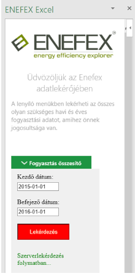

Open Enefex-DataQueryManager
To turn on the Enefex-DataQueryManager push the "Bejelentkezés"(Login) button in the Ribbon.
Login page
On the opening window the user can see the login page.
The username and the password was sent in email.
On this panel write your username in the "Felhasználónév"(username) text box, and the password in the "Jelszó"(password) text box then click on the "Bejelentkezés"(login) button.
If you see the "Hibás felhasználónév, vagy jelszó" (wrong username or password) error message please looking for the support contact in http://www.enefex.eu/ site.
Home page
After a successful login the login page is changing to home page.
In this window you have 3 opportunities.
- You can Open the "Fogyasztás összesítő"(consumption summary) dropdown window.
- You can Open the "Feldolgozott mérések"(processed measurements) dropdown window.
- You can click the "Kilépés"(Logout) button
1. Consumption summary
If you clicked on the "Fogyasztás összesítő"(consumption summary) button you can see the following dropdown menu.
In this dropdown menu you can adjust the "Kezdő dátum"(Begin date) and the "Befejező dátum"(End date) of the data query. After it click the "Lekérdezés"(Query) button.
If you get a red error message please follow the instuctions to fix the issue.
If you set everything well then after clicking the "Lekérdezés"(Query) button you going to see the "Szerverlekérdezés folyamatban..."(server query in progress...) line.
Note During the server query process you can not use the other functions of excel. Please do not quit the excel or turn of the computer during the query process..
Note The query process can take a few minutes.
After a successful query process you can see the query results on IN_F0 worksheet. (If it did not exist before the Add In going to create this worksheet)
2. Processed measurements
If you clicked on the "Feldolgozott mérések"(processed measurements) button you can see the following dropdown menu.
In this dropdown menu you can adjust the "Év"(Year) of the the data query. After it click the "Lekérdezés"(Query) button.
If you get a red error message please follow the instuctions to fix the issue.
If you set everything well then after clicking the "Lekérdezés"(Query) button you going to see the "Szerverlekérdezés folyamatban..."(server query in progress...) line.
Note During the server query process you can not use the other functions of excel. Please do not quit the excel or turn of the computer during the query process.
Note The query process can take a few minutes.
After a successful query process you can see the query results on IN_É0 worksheet. (If it did not exist before the add in going to create this worksheet)
3. Logout
By clicking the "Kilépés"(Logout) button you get back to the login page.
Note For security reasons after the logout process the page going to forget the login datas (username and password).